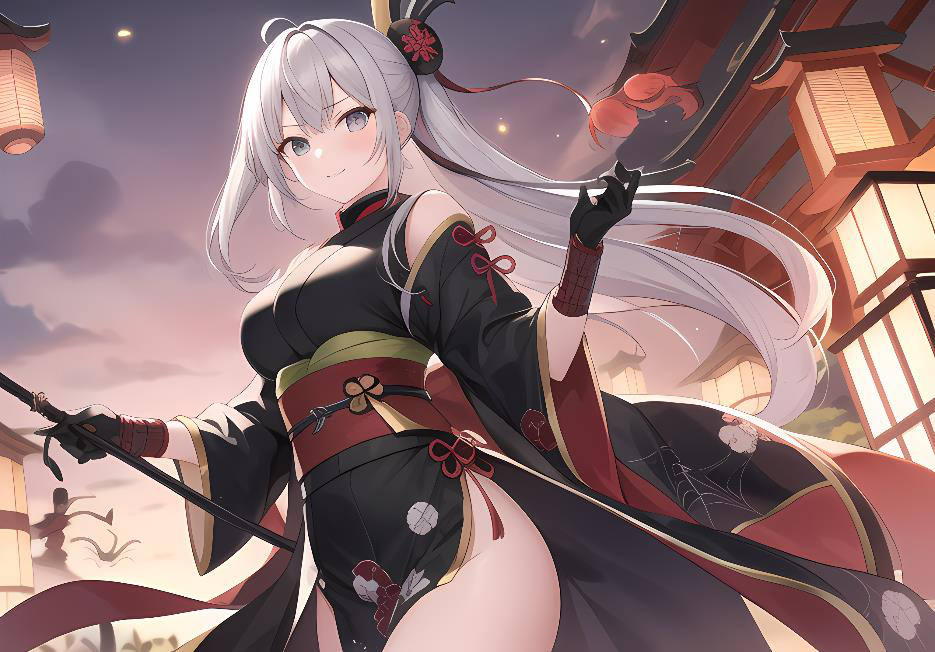

Crea tu YosaiEl mundo lo hacéis vosotros
Creando tu Yosai
Nakama no está pensado para dartelo todo. No te vamos a dar todos los Yosai (Fortalezas) y todos los
Kazokus (Casas) que pueden haber en el mundo.
Como mucho, lo que te damos son ejemplos que puedes seguir. Pero lo realmente interesante de Nakama es dejar a los jugadores que creen la personalidad de sus Yosai con sus respectivas
Kazokus (Casas), y sus familias, usando tú, como director de juego, dichas historias para entrelazarlas con alianzas, matrimonios y pasado común interesante, y darle personalidad al Yosai en que basarás la historia.
Nosotros te damos el punto de partida, pero sois tú y tus jugadores los que tenéis que insuflar vida en el Yosai.
¿Qué pueden hacer los jugadores?
Los jugadores podrían hacer un par de personajes secundarios más de su Kazoku (Casa), y explicar qué relación tienen con su personaje principal. Además, podrían inventar una leyenda y darle color y algunos rasgos comunes a los miembros de ésta. Así, el Kazoku la Salamandra) es conocido Sanshoo (Casa de especialmente por su cabello pelirrojo como predominante, y los colores negro y rojo en sus ropajes.
¿Qué puede hacer el director de juego?
El director debe crear historias secretas, relaciones prohibidas, concertar matrimonios, y crear un entorno vívido que ayude a sentirse dentro del Yosai
(Fortaleza). Ser un Senshi (Guerrero) es algo más que pelear y tener poderes y magia, es ser parte de una gran estructura viva.
La función es básicamente, crear el resto de Kazokus (Casas), y darles relaciones entre sí para crear el Yosai.
¿Qué historias puedo contar?
Esto es más difícil de responder, pero tienes en tus manos la posibilidad de jugar centrado en combate, en la política familiar, en la etiqueta en la corte, e incluso en la rama militar, creando una nueva Gran Guerra.
Lo importante es que te damos una herramienta para dar consistencia a los grupos (Los Yosai - las Fortalezas), pero también con fuentes de conflicto
(Los Kazoku - las casas).
Varios Yosais a la vez
Una de las cosas interesantes de Nakama, es que se pueden jugar a la vez con varios Yosais, enlazando historias y entrecruzandose. Así podemos tener diferentes estilos de juego con cada uno de ellos, pero todo el mundo avanza a la vez. Incluso podemos poner a los jugadores desde el punto de vista de sus propios enemigos.
Y es una herramienta muy interesante si falta gente y hay que jugar partidas de relleno, puede hacerse perfectamente con personajes menos relevantes y con historias más sencillas.
Por ejemplo, en la saga de Jaken Kokoro puede empezarse siendo de Yami Yosai para liberarlo, luego ser de Tengoku Yosai para parar la amenaza inminente del Jaken Kokoro, haciendolo huir, y tener que pedir ayuda a otro de los Yosais, metiendo política por medio. Y este último Yosai, enviará a sus guerreros a ayudar a Tengoku.
Así los jugadores llevarían personajes de 3 Yosais diferentes en la misma historia, dando un punto diferente de vista a la campaña.
Recuerda, es una herramienta simplemente, usarla o no es cosa tuya.
Yosais que no son Yosais
Una de las posibilidades que da el juego es jugar con organizaciones que no se estructuran como Yosais, lo importante es pensar en como llevar a los Personajes en un grupo dentro de esta organización.
Dos ejemplos para esto son:
Jiyu Kantai, una flota pirata en el que la gente se divide en flotas de barcos.
Ronins, Senshis renengados que han huido de sus Yosais por un motivo u otro.
Ejemplos de Yosais modificados
Un ejemplo clásico de Yosai modificado en Nakama es el del Yami Yosai. Inicialmente, Yami mandaba y mantenía la paz en todo el Imperio. Pero la rebelión de los Yosais menores comenzó un periódo de guerras y destrucción.
Escondidos en las Sombras, los jugadores pertenecen a un Yosai que busca recuperar su gloria.
Esto es diferente a como se ve el Yami de forma clásica, un grupo de tiranos sin escrúpulos que gobernaban esclavizando a todos los campesinos y subyugando a los campesinos.
Dale tu toque a tu Yosai, hazlo tuyo.
Ejemplos de Kazokus menores Risu (Ardilla)
Tienen a los dos hermanos Kokoro y Shin como su mayor esperanza. No creen que lleguen a formar parte de las grandes casas, pero sí a despuntar entre las menores para conseguir mejor descendencia con ellos y crecer en un futuro. Tienen en mira a Kitsune
(Zorro) y Tora (Tigre) como posibles uniones, sea con los hijos mayores, o con los hijos pequeños. Tanuki (Mapache)
Están seguros de conseguir bajo el liderazgo de la Daimyo (Señor) Akane y su descendencia alcanzar a las grandes casas. La muerte de su anterior Daimyo
(Señor) protegiendo al Hi Shogun (Señor de la Guerra de la fortaleza del Fuego) en la última batalla contra Yami Yosai (Fortaleza de la Oscuridad) les favorece aún más en sus aspiraciones, en contra de lo que podría haber parecido en un principio.
Tsubame (Golondrina)
De Tsubame, Natsuki la Daimyo (Señora) es la única que ha demostrado estar a alto nivel, aunque aún no ha conseguido casarse debido a que no encuentran a nadie adecuado, y con el paso del tiempo, quizás se convierta en un imposible a menos que lo hagan con otro Yosai (Fortaleza) distinto, algo a lo que son muy reacios. Se consideran los protectores de la parte baja de la ciudad, y siempre están intentando que alguna familia crezca, o mejor aún, que la parte baja gane en importancia.

Organizaciones que no son Yosai
- Jiyu Kantai: una flota pirata en la que la gente se divide en flotas de barcos.
- Ronin: Senshi renegados que han huido de sus Yosai por un motivo u otro.
Un ejemplo clásico de Yosai modificado es el propio Yami: los jugadores pueden pertenecer a un Yosai escondido en las sombras que busca recuperar su gloria, en vez del clásico grupo de tiranos que gobernaba esclavizando y subyugando a los campesinos. Dale tu toque a tu Yosai, hazlo tuyo.